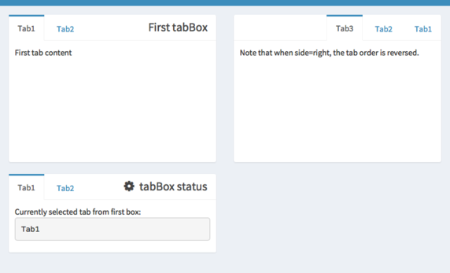

Please evaluate the Tutorial (if not done yet)
The link to the feedback form can be found on Slack
We suggest below milestones to choose from
On the following pages you will find hints on how to complete them
Using shinyapps.io (free)
OR install shiny-server on a server that is remotely accessible and has port forwarding
We can enhance our dataTableOutput with extensions,
check: https://rstudio.github.io/DT/extensions.html
To add a button for downloading displayed data in csv format (e.g. to open in MS Excel),
we can add the following code to the renderDataTable() function:
extensions = 'Buttons',
options = list(
pageLength = 10,
scrollX = T,
pagingType = 'simple_numbers',
dom = 'Bfrtip',
buttons = list(
list(extend = 'csv', filename = 'selected_dots')
)
),
rownames = F,
server = F # necessary to download whole table
Pay attention to the fact that some settings are provided inside the options list (!)
(note: the dom = 'Bfrtip' part is crucial)
It can be a good idea to subset the dataset, to show only relevant information.
For example, using the iris dataset, we can select the species that we want to show.
One way to achieve this is via using reactive({}) together with selectInput:
selectInput(
'species',
label = 'Species',
choices = levels(iris$Species),
selected = levels(iris$Species),
multiple = T
)
# Subset iris data based on selected species
data_subset <- reactive({
req(input$species)
iris_subset <- filter(iris, Species %in% input$species)
})
# Adjust ggplot to use the subset dataset
violinplot <- reactive({
ggplot(data_subset(), aes(x=Species, y=Petal.Length)) +
...
})
We can get more widgets from the shinyWidgets package!
Let's improve the subsetting by allowing drag and drop ordering of the species, using selectizeInput
- or try to add another widget from the package
library(shinyWidgets) # capital W
...
selectizeInput(
inputId = 'species',
label = 'Species',
choices = levels(iris$Species),
selected = levels(iris$Species),
multiple = T,
options = list(
plugins = list('remove_button', 'drag_drop')
)
)
data_subset <- reactive({
req(input$species)
iris_subset <- filter(iris, Species %in% input$species)
# Adjust factor levels to make the plot honour our custom order
iris_subset$Species <- factor(iris_subset$Species, levels=input$species)
iris_subset <- iris_subset[order(iris_subset$Species), ]
})
Check the documentation of shinydashboard
Add another element to your UI, e.g. a tabBox() (easy) or menuItem() (a bit more tricky)
Favicons are small icons that a website can display in the tabs of your browser
We can add a favicon to our Shiny app like this:
# Add this to tags$head()
tags$link(rel='shortcut icon', href='favicon.png'),
Filepaths can be tricky, another way to include the favicon is by encoding it as a base64 image source
using small (!) images and a converter, like https://www.base64encoder.io/image-to-base64-converter/
# Add this to tags$head()
tags$link(rel='shortcut icon', href='data:image/png;base64,iVBORw0KGgoAAAANSUhEUgAAAQAAAAEACAYAAABccqhmAAA...'),
If you get an "unexpected symbol" error, try starting the app by pressing the "Run App" button in R Studio.
By including the introjs JavaScript library, we can create an attractive help function!
# Add this at the end inside dashboardBody()
includeScript('https://cdn.jsdelivr.net/npm/intro.js@7.2.0/intro.min.js')
Using ID selectors, we can attach help texts to HTML elements in our Shiny App
The help texts are defined in JSON (JavaScript Object Notation) format, like this:
tags$script("
// create an array with objects describing each step in the guided tour
var Steps = [
{
element: '#species-label',
intro: 'Select the iris species that you would like to include in the plot. You can drag and drop the items to display the species in the desired order.',
position: 'right'
},
{
element: '#size-label',
intro: 'You can adjust the size of the dots in the plot.',
position: 'right'
}
...
];
")
Now let's add an actionButton inside the dashboardSidebar()
actionButton(
inputId = 'help',
label = 'Help',
icon = shiny::icon('question-circle')
)
And extend our JavaScript to call the help function when clicking on the actionButton (check the id!)
// Below JSON
// initialize an introjs instance
var intro = introJs();
// load data
intro.setOptions({steps: Steps});
// start intro onclick on help button
document.querySelector('#help').addEventListener('click', function(e) {
intro.start();
});
You can troubleshoot JavaScript errors using your browser's developer tools [F12] console
In ggplot, we can add a statistics layer to a plot:
... +
stat_compare_means(
comparisons = pairwise_comp( unique(data_subset()$Species)),
method = 'wilcox.test',
label = 'p.signif'
)
Here we use the pairwise_comp function to create a list of comparisons between two neighbouring species
pairwise_comp <- function(conditions) {
conditions.clean <- unique(as.character(conditions))
comparisons <- combn(conditions.clean, 2, simplify=F)
return(comparisons)
}
To enable dynamic toggling of the statistics layer,
add an input widget (e.g. checkboxInput()) and change the plot definition:
# Instead of returning the plot directly, store it for later modification
violinplot <- reactive({
pl <- ggplot(data_subset(), aes(x=Species, y=Petal.Length)) +
...
if(input$statistics == T && !is.null(data_subset())) {
pl <- pl +
stat_compare_means(
...
)
}
pl
})
(of note: if you have a server, you could also set up a reverse-proxy with nginx
and use .htpasswd basic authentication, but this is not a milestone!)
→ Slack